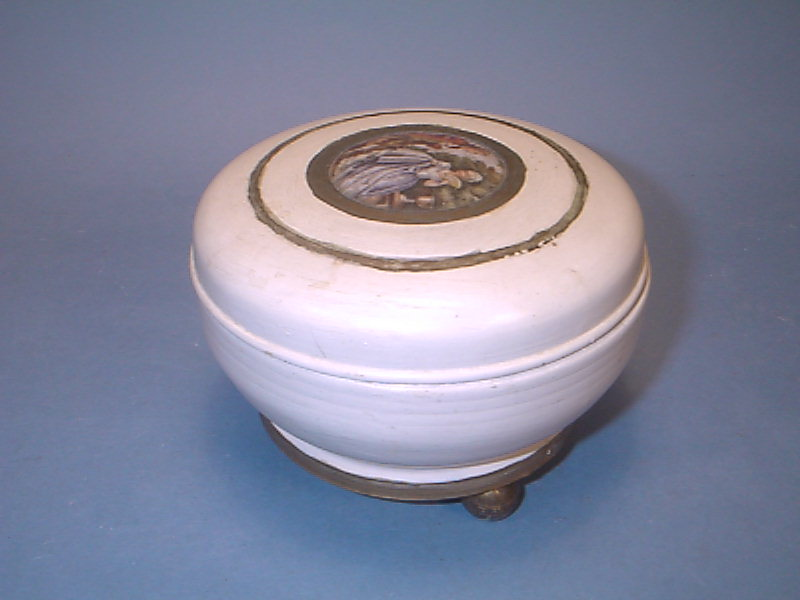
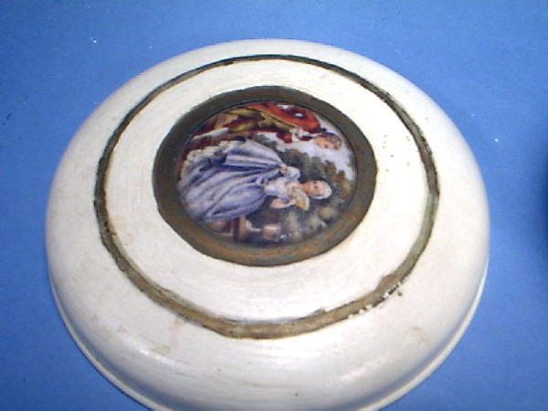
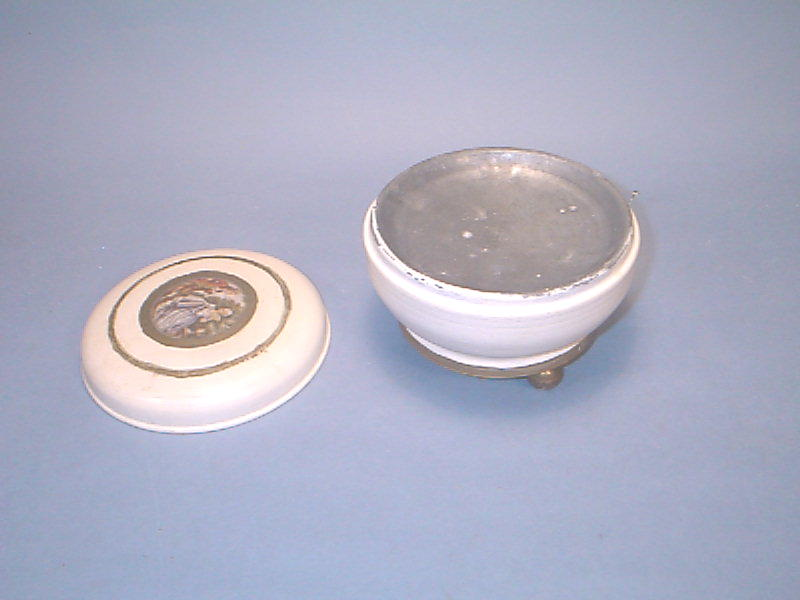

Antique Powder Puff music box
This was owned by Kay's mother back in the 1930's or earlier. She got
on a painting binge and painted most of her furniture and other items in
this color.
It plays a tune I do not recall although
it seems familiar. Because it is in a metal container it has a beautiful
sound much better than most music boxes. It probably is not made in Japan.
There is no country of origin on it.



$200.00